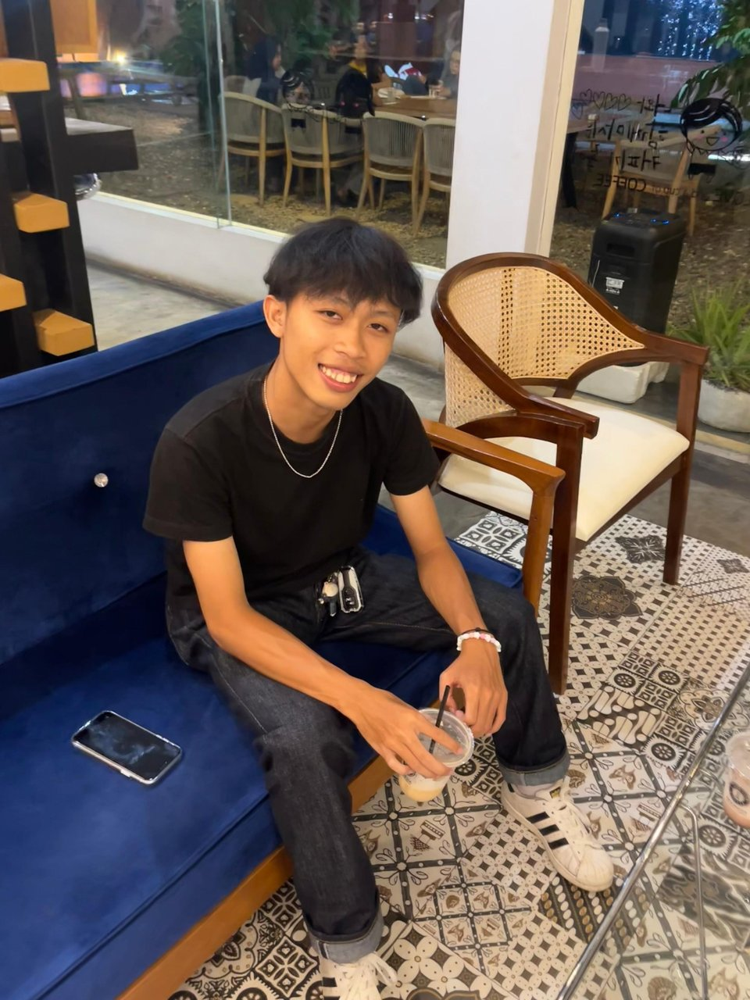
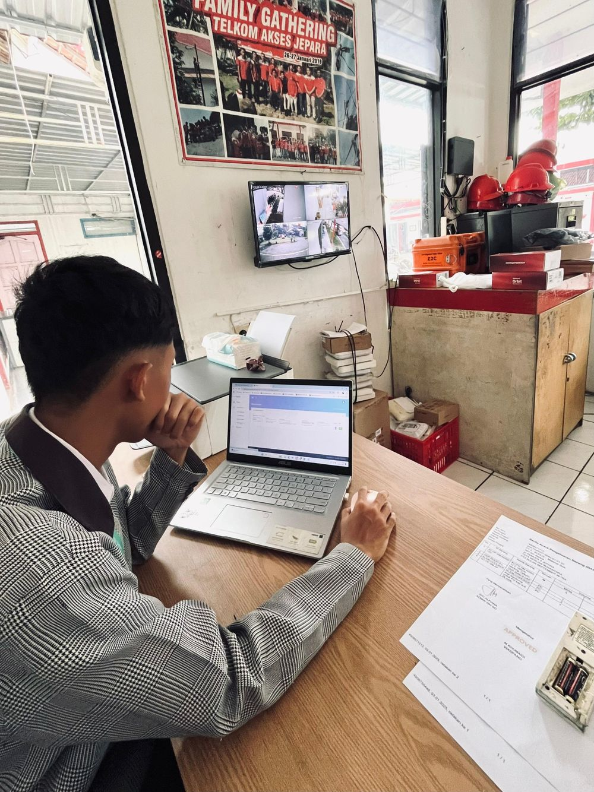

Web Development
Website dinamis dari front-end sampai back-end.
Halo, saya
Mahasiswa PTIK UNNES yang membangun web yang cepat, rapi, dan terasa hidup.

AJSaya Azaria Jonathan Manuela, mahasiswa Pendidikan Teknik Informatika dan Komputer (PTIK) Universitas Negeri Semarang. Saya suka mengubah ide menjadi produk web yang rapi, cepat, dan nyaman dipakai.
Fokus saya ada di web development, UI/UX, database, dan kecerdasan buatan, dengan target menjadi Software Engineer dan Full Stack Web Developer.
Website dinamis dari front-end sampai back-end.
Antarmuka bersih dan konsisten yang mengutamakan pengguna.
Tampil pas di desktop, tablet, dan ponsel.
ERD dan skema MySQL yang efisien dan mudah dikembangkan.
Interaksi dan animasi halus dengan JavaScript modern.
Pada Januari sampai April 2025, selama 4 bulan, saya menjalani Praktik Kerja Lapangan di PT Telkom Akses Jepara. Di sana saya belajar bekerja di lingkungan perusahaan telekomunikasi dan membiasakan diri dengan ritme kerja yang disiplin.

Praktik kerja lapangan selama 4 bulan di PT Telkom Akses Jepara.
Memulai kuliah, mengenal dasar pemrograman, dan mengikuti Pelatihan Manajemen Kepemimpinan Teknik Elektro (Okt 2025).
Membangun website, mengerjakan Mini Project OOP, dan mendalami database.
Target: pengalaman kerja nyata di dunia software.
Membangun produk digital yang berdampak.